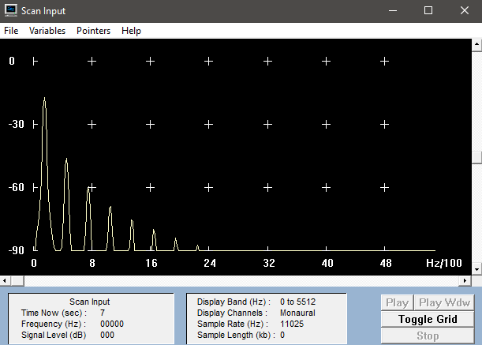
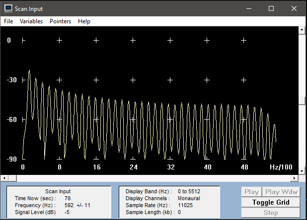

Übung 3
Nr.2
Sinus
1. Schwingung: 150hz -20db (100%)
2. Schwingung: 440hz -47db (weiß ich nicht)
3. Schwingung: 721hz -62db (weiß ich nicht)
4. Schwingung: 1012hz -71db (weiß ich nicht)
5. Schwingung: 1082hz -75db (weiß ich nicht)
Dreieck
1. Schwingung: 151hz -19db (100%)
2. Schwingung: 431hz -37db (weiß ich nicht)
3. Schwingung: 711hz -47db (weiß ich nicht)
4. Schwingung: 1012hz -53db (weiß ich nicht)
5. Schwingung: 1303hz -56db (weiß ich nicht)
Säge
1. Schwingung: 151hz -23db (100%)
2. Schwingung: 280hz -30db (weiß ich nicht)
3. Schwingung: 441hz -32db (weiß ich nicht)
4. Schwingung: 581hz -55db (weiß ich nicht)
5. Schwingung: 711hz -38db (weiß ich nicht)
Rechteck (50/50)
1. Schwingung: 151hz -16db (100%)
2. Schwingung: 431hz -27db (weiß ich nicht)
3. Schwingung: 711hz -32db (weiß ich nicht)
4. Schwingung: 1012hz -37db (weiß ich nicht)
5. Schwingung: 1292hz -39db (weiß ich nicht)
Rechteck (30/70)
1. Schwingung: 140hz -18db (100%)
2. Schwingung: 301hz -25db (weiß ich nicht)
3. Schwingung: 409hz -37db (weiß ich nicht)
4. Schwingung: 571hz -34db (weiß ich nicht)
5. Schwingung: 732hz -32db (weiß ich nicht)
Rechteck (10/90)

1. Schwingung: 129hz -27db (100%)
2. Schwingung: 280hz -25db (weiß ich nicht)
3. Schwingung: 571hz -30db (weiß ich nicht)
4. Schwingung: 721hz -32db (weiß ich nicht)
5. Schwingung: 872hz -34db (weiß ich nicht)
Nr.3
VCV-Rack Screenshot
Fall A
Differenz Periodendauer: 0.6s
Differenz Frequenz: 0.75Hz
Mittel-Differenz Periodendauer: 0.006s
Mittel-Differenz Frequenz: 147.8Hz
Fall B
Differenz Periodendauer: 0.05s
Differenz Frequenz: 0.73Hz
Mittel-Differenz Periodendauer: 0.006s
Mittel-Differenz Frequenz: 147.8Hz
Nr.4
Wir haben versucht ein Holz-Xylophon nachzuahmen. Die 2. Spur musste ich muten, da sonst ein nerviges Piepsen zu hören war, welches aber nur in der Aufnahme zu hören war, jedoch nicht in VCV selbst
VCV-Datei (Download)